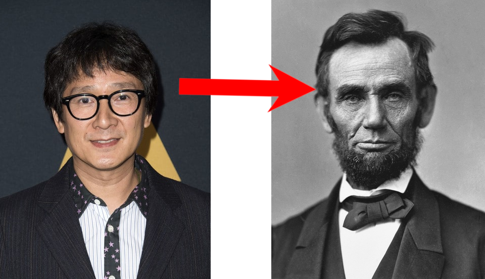
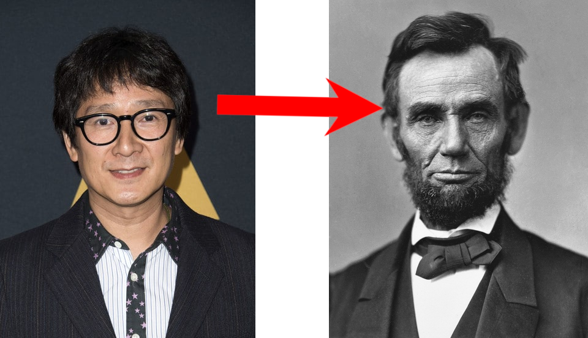

The Great Wall isn't just a historical barrier; it's actually an enormous barcode. Each section represents a different product from an ancient civilization's catalog. The real reason it's so long is because they had a lot to sell, and the ancient checkout system required a wall-length scan.

All major historical figures were actually actors from the future who traveled back in time to play roles in shaping history. Their elaborate costumes and dramatic events were just part of a grand historical reenactment show that’s been broadcast across time. Look at this proof:

